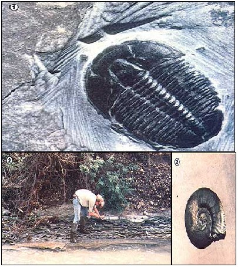

[1] Usually, only whole specimens of trilobites, such as this well-preserved Elrathia, are prized by collectors. [2] The author has found hundreds of fossils-in a creek bed near his home. [3] The flat coil of this cephalopod distinguishes it from the more common spiraled snail fossils.